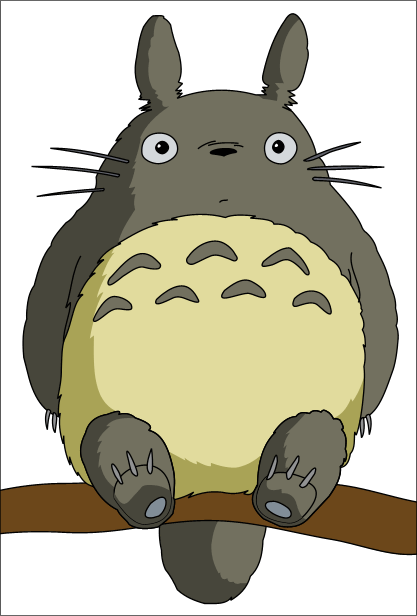

| My Neighbor Totoro |
1988 |
Blue Ribbon Award (Special) |
| This acclaimed animated tale by director Hayao Miyazaki follows schoolgirl Satsuke and her younger sister, Mei, as they settle into an old country house with their father and wait for their mother to recover from an illness in an area hospital. As the sisters explore their new home, they encounter and befriend playful spirits in their house and the nearby forest, most notably the massive cuddly creature known as Totoro.

|
| Princess Mononoke |
1997 |
Nebula Award (Best Script) |
| In the 14th century, the harmony that humans, animals and gods have enjoyed begins to crumble. The protagonist, young Ashitaka - infected by an animal attack, seeks a cure from the deer-like god Shishigami. In his travels, he sees humans ravaging the earth, bringing down the wrath of wolf god Moro and his human companion Princess Mononoke. Hiskattempts to broker peace between her and the humans brings only conflict. |
| Spirited Away |
2001 |
Academy Award (Best Animated Feature) |
| In this animated feature by noted Japanese director Hayao Miyazaki, 10-year-old Chihiro (Rumi Hiiragi) and her parents (Takashi Naitô, Yasuko Sawaguchi) stumble upon a seemingly abandoned amusement park. After her mother and father are turned into giant pigs, Chihiro meets the mysterious Haku (Miyu Irino), who explains that the park is a resort for supernatural beings who need a break from their time spent in the earthly realm, and that she must work there to free herself and her parents. |
| Howl's Moving Castle |
2004 |
Hollywood Film Festival (Animation OTY) |
| Sophie (Emily Mortimer) has an uneventful life at her late father's hat shop, but all that changes when she befriends wizard Howl (Christian Bale), who lives in a magical flying castle. However, the evil Witch of Waste (Lauren Bacall) takes issue with their budding relationship and casts a spell on young Sophie, which ages her prematurely. Now Howl must use all his magical talents to battle the jealous hag and return Sophie to her former youth and beauty. |